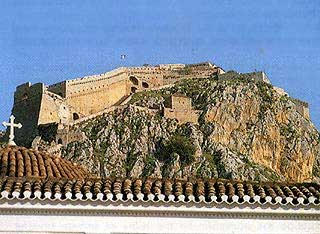

Παλαμήδι
 Αριστούργημα οχυρωματικής κατασκευής θεωρήθηκε το Κάστρο του Παλαμηδιού, όταν κατασκευάστηκε (1687, Β΄ Ενετοκρατία στην Πελοπόννησο) για να αποτελέσει το κύριο αμυντικό σύστημα του Ναυπλίου, τότε πρωτεύουσας της Πελοποννήσου. Περιλάμβανε μικρά αυτόνομα οχυρά (προμαχώνες) και σημαντικό αριθμό κανονιών (70 περίπου την εποχή της επανάστασης του 1821). Η επικοινωνία του με την πόλη γινόταν μέσω δύο διόδων, μια από τις οποίες αριθμεί 880 σκαλοπάτια. Στα χέρια των Τούρκων από το 1715, καταλήφθηκε από τους Έλληνες μετά την ήττα του Δράμαλη στα Δερβενάκια (1822). Στη συνέχεια το φρούριο χρησιμοποιήθηκε σαν φυλακή. Στο Παλαμήδι εκτελέστηκε ο Γεώργιος Μαυρομιχάλης, ένας από τους δυο δολοφόνους του Καποδίστρια. Στον κεντρικό προμαχώνα του φρουρίου φυλακίστηκε της εποχή της Αντιβασιλείας ο Θεόδωρος Κολοκοτρώνης. | ||